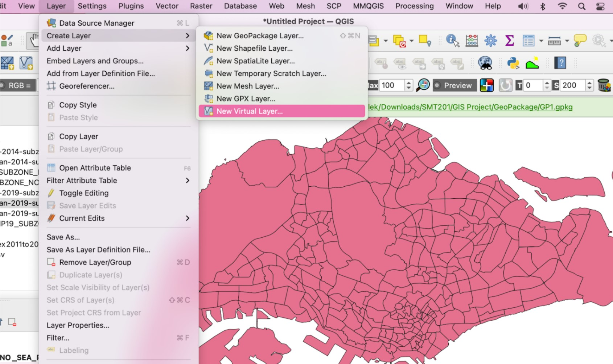
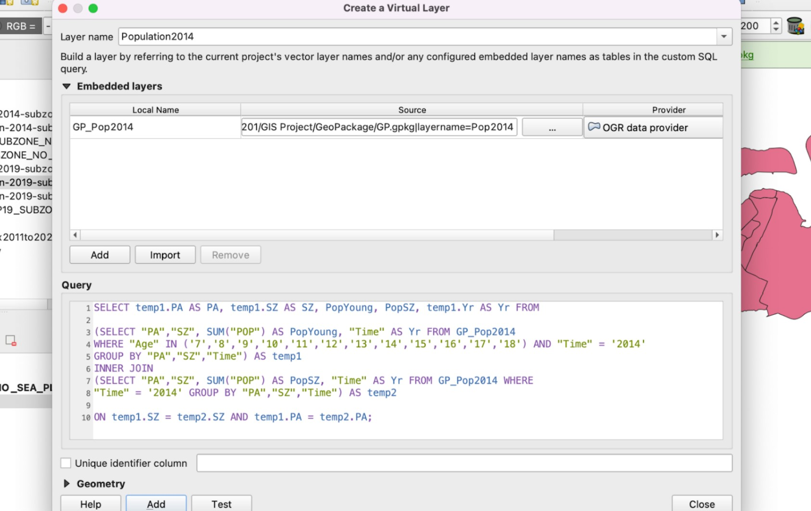
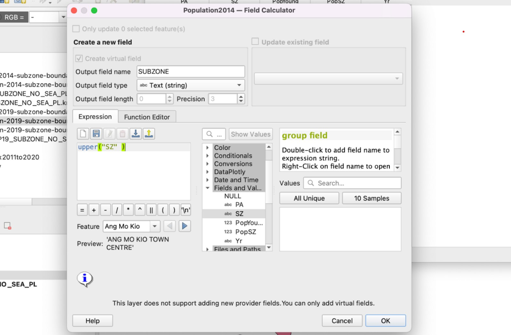
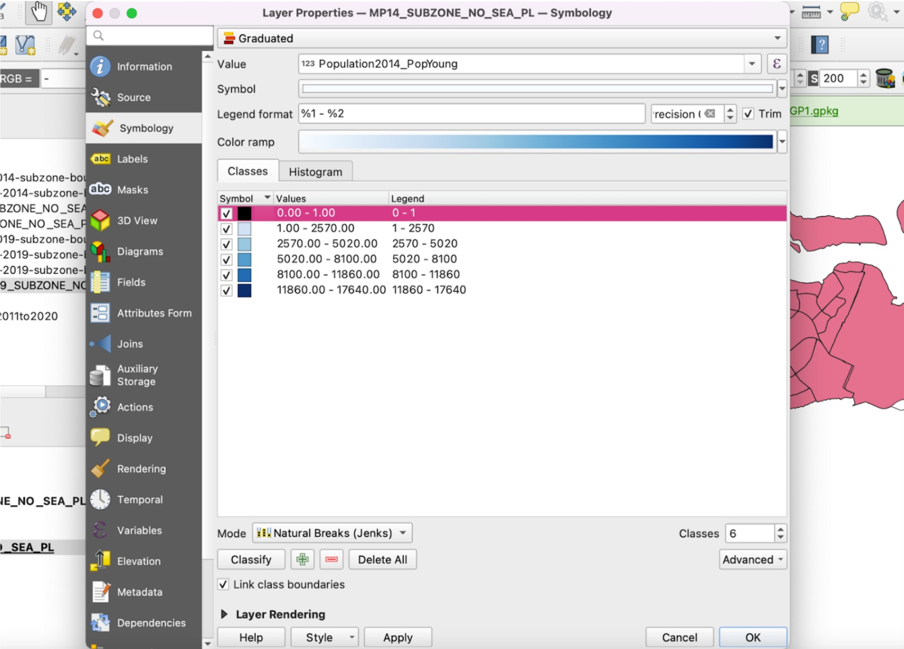

Preparation of Chloropleth Map
1. Loading the GIS Data
Before you can start to perform any analysis, you need to load all the appropriate GIS data into QGIS.
1.1 Masterplan 2019 Subzone
We will first add our Masterplan 2019 Subzone into our GIS Layer, this will serve as the base map layer for our study. It contains polygons for the land spaces in Singapore.
Hover over to Layer tab > Add Layer > Add Vector Layer...
Click add vector layer and you should be able to see the Data Source Manager | Vector, select the master-plan-2019-subzone-boundary-no-sea-geojson.geojson file.
1.2 Residential Population Age and Sex 2000 to 2010 and 2011 to 2020
This Data Layer provides the population of different age groups at different locations in Singapore in csv. File.
Firstly, add in respopagesex2011to2020.csv, under Layer tab > Add Layer > Add Delimited Text Layer.
Once you clicked on Add Delimited Text Layer you should see the Data Source Manager | Delimited Text. You should search for respopagesex2011to2020.csv.
After adding the csv file, it will appear under Layers. Repeat the same steps to open respopagesex2011to2020.csv.
Before you can perform attribute query, you need to examine both respopagesex2011to2020.csv layers carefully and to identify the appropriate field and object name (s) to query.
● At Browser pane, right-click on respopagesex2000to2010.
● From the context menu, select Open Attribute Table.
The Attribute Table window appears.
In our study, we are only interested in finding the populations in year 2014, 2015, 2017, 2019, 2020. Hence, we can filter out the desired data using the Expression icon.
Now, you are going to enter the expression.
● From the Expression pane, click on “=” icon.
Next, you are going to complete the query statement by providing the field value.
● At the Values pane, click on the all unique button.
Your screen should look similar to the figure below.

Change the year accordingly to 2014, 2015, 2017, 2019, 2020.
After entering the query, click on Select Features and close the window. We will see that all the data with “Time” = ‘2014’ selected only as shown below.
Close the attribute table and right click on the layer. Go to Export > Save Selected Features As.. to save the layer with only 2014 values into a new GeoPackage layer.
We will name this exported layer as Population2014.

Repeat the steps to obtain the data for the other years.
After exporting the layers, we should see them appear on the Layers tab as shown below. We can now remove the respopagesex2011to2020 layer.
2. Creating Virtual Layers
Now that we have all the data that we need for analysis, we want to get the geographical distribution. We will do so by creating a virtual layer and using SQL statements to get the data to be shown on the map.
Layers > Create Layer > New Virtual Layer

We will create 5 different virtual layers, Young_Population2014, Young_Population2015, Young_Population2017, Young_Population2019, Young_Population2020.

Import the GeoPackage layers under Embedded layers and enter the following query in the query tab.
After adding, a new layer is created. To better understand, let’s open the attribute table of this new layer. We see 2 new attributes created: PopYoung and PopSZ.
3. Creating Subzone Name attributes in Population Layers to do a join
To do a Join, we need to find a common attribute between 2 tables. However, we notice that the column SZ in our Population layers are all in lowercase while that of the Subzone layers are in uppercase. Hence, we will add a new attribute in the population layers as SUBZONE.
Right click on the layer name and select Open Attribute Table > Open Field Calculator
Fill in the Output field name as SUBZONE, output field type as Text and the following expression into Expression tab.

After clicking OK, we see a new column SUBZONE created which is now in uppercase.
4. Join attributes to obtain the area for each population
Now that all the required data are present, we can now perform a join. When we perform a join, we will join based on the common attributes that both layers have, which in this case is SUBZONE of the population layers and SUBZONE_N of the subzone layers.

Right click on the URA_MP19_SUBZONE_NO_SEA_PL layer > Properties.. > Joins
For the Join layer, we select the year that corresponds to the subzone layer used.
For the Join field, we select SUBZONE
For Target field, we select SUBZONE_N
Then select OK. We will see the joined layer under the join tab.
5. Creating the Choropleth Map
To create a choropleth map, right click on the Subzone layers where we performed the Join previously and select Properties > Symbology

Select Graduated from the dropdown box at the top
For the Value, select the PopAged column that we have obtained from the join.
For the Mode, we will be using Natural Breaks (Jenks).
For Classes, we will select 6. This is because we want to isolate the areas where there is 0 population, in other words, inhabitable. Hence, there will be a total of 5 ranges and an additional one to represent inhabitable areas.
We will change the colour of the inhabitable areas with range 0-1 to a distinct colour such as black so that we can easily distinguish it.
As for the Colour ramp, we will be selecting Blues.
As we will be comparing across the different years, we need to standardize the ranges for our choropleth map for all maps. We will use the following values:
0 - 1
1 - 2570
2570 - 5020
5020 - 8100
8100 - 11860
11860 - 17640
These values have been selected as the largest value for all Young population is 17640 and we want 5 classes, so we take the ranges of 17640/5.
To view our completed chloropleth maps for all 5 years, refer to the ‘Results and Discussion’ tab.